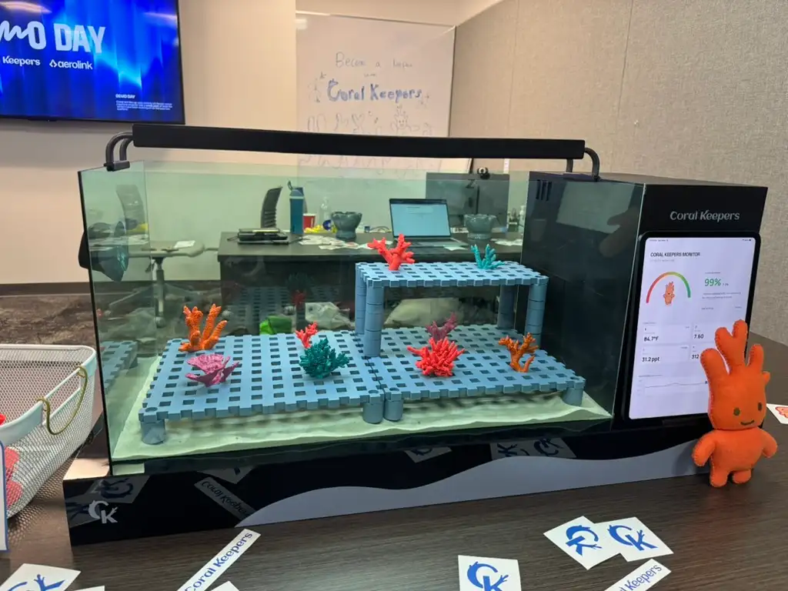
The classroom tank, led and built by Giuseppe Mollo. Everything below is the software that runs on it.
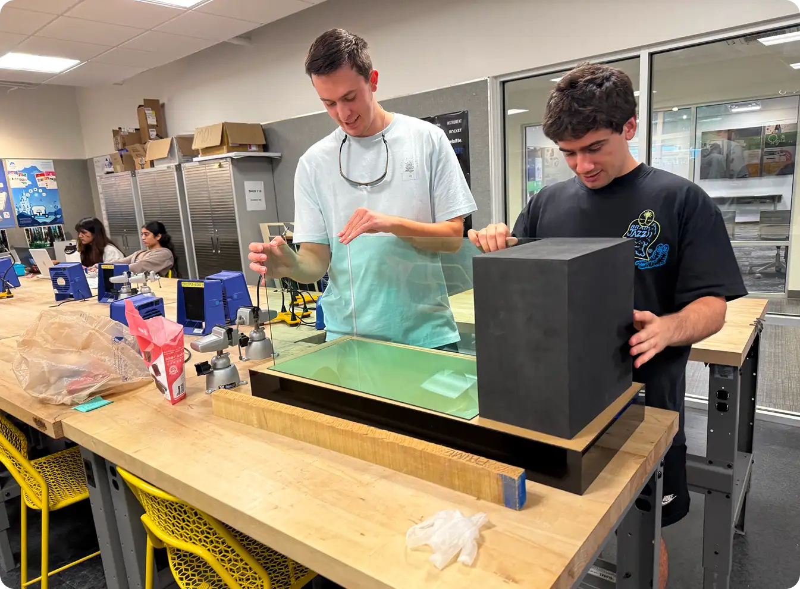
Assembling the housing in the shop. The tank was real hardware before it was a screen.
Problem
Coral restoration doesn't scale, because it depends on specialists.
Roughly 90% of the world's reefs are projected to be threatened by 2030. Restoration works — the science is understood — but it runs through marine biologists, grant funding, and localized nurseries. There simply aren't enough people doing it, and no obvious way to add more.
Research
The research changed what we were building.
We spent the first ten weeks on research as a full team: 12 interviews with marine biologists, reef researchers, and academics, plus site visits to the Skidaway Institute of Oceanography and Gray's Reef Ocean Discovery Center. Over 545 data points, affinitized.
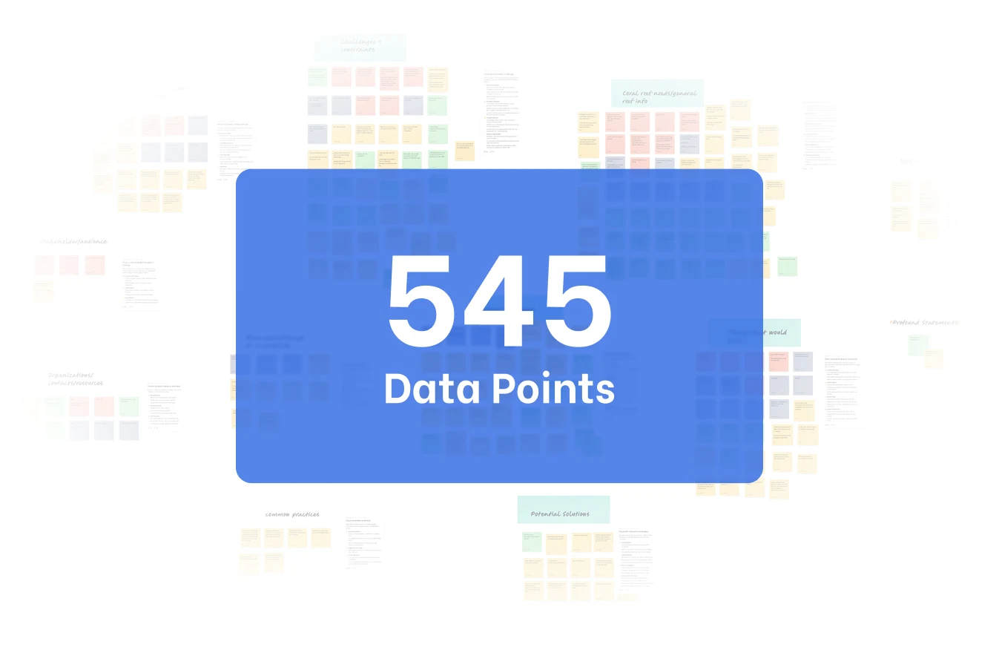
Ten weeks of interviews and site visits, grouped into themes. Graphic by Giuseppe Mollo, from the team's shared research board.
We started out designing in-ocean coral health monitoring — sensors on real reefs, feeding data to scientists. The interviews took that apart. The constraint wasn't measurement. Researchers already knew what was happening to the reefs. The constraint was labor and scale: too few people, too little funding, too slow.
So we rewrote the problem. Not how do we monitor reefs better, but how do we let far more people participate in growing coral. Every decision after that came from the second question, including the one that put a tank in a classroom instead of a sensor in the ocean.
Architecture
Three contexts, not one responsive app.
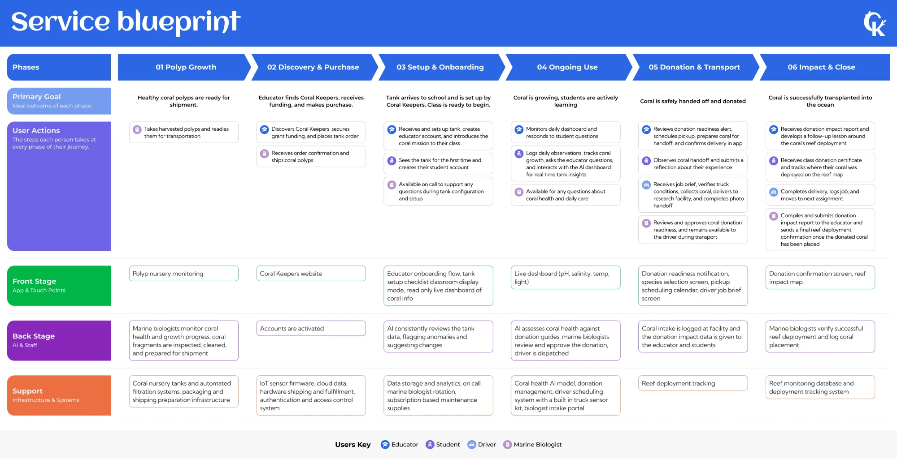
The service runs longer than the software. Six phases from polyp to reef, four people involved — educator, student, driver, marine biologist — and the digital product only touches part of it.
Our research produced distinct user archetypes, and they don't share a context. A teacher checking the tank between classes, a student working an assignment, and a room glancing at a wall display are three jobs with three different attention budgets — so I built three surfaces rather than one responsive layout. It also let me ship and iterate on each independently, which mattered with a fixed deadline and one person building.
The iPad monitor is ambient. It sits by the tank, shows vitals and nothing else, and needs no interaction.
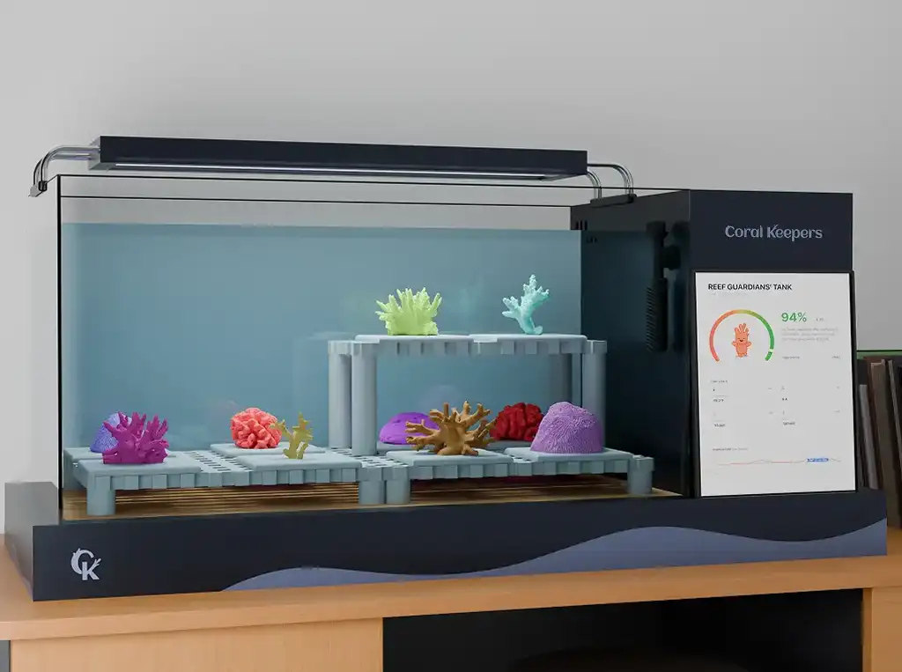
The monitor is part of the tank, not a separate device someone has to go find.
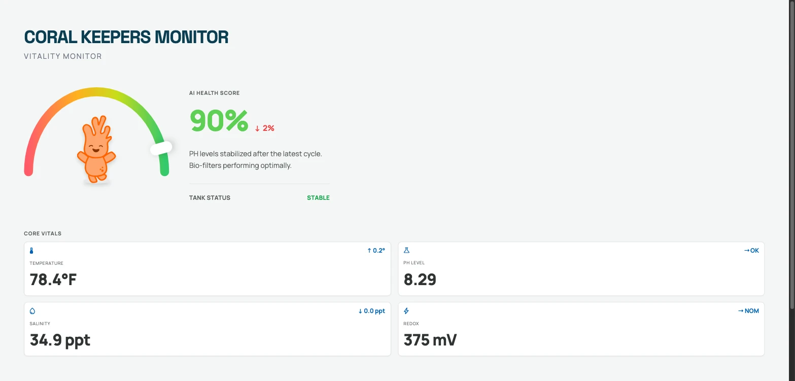
The teacher app is for monitoring away from the tank and escalating to a real biologist when something looks wrong.
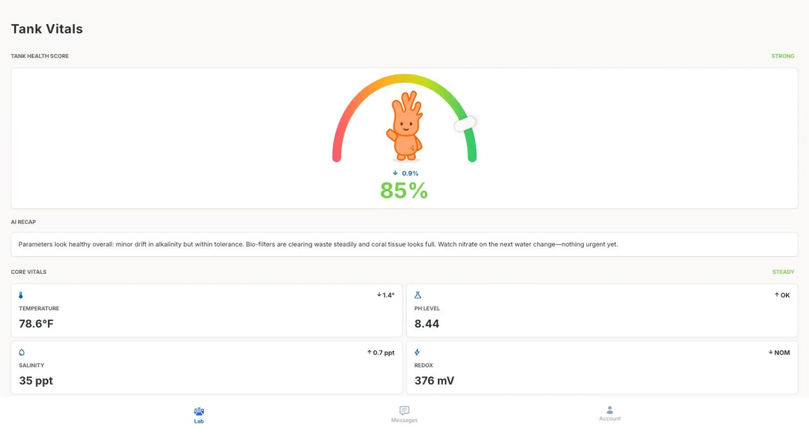
The web platform is the depth — coursework, assignments, class teams, live tank feed, simulation. Where the teaching happens.
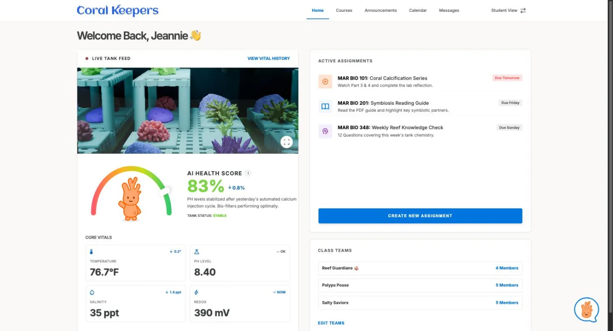
Where the navigation came from
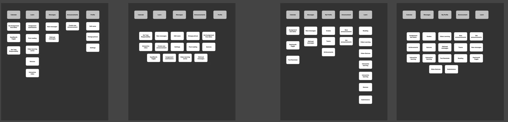
We ran a closed card sort to settle the platform's navigation — fixed categories, scrambled cards, four participants. The useful result wasn't the consensus, it was the outlier: one participant swept almost everything into a single heading rather than distributing it. When a category can absorb that much, it isn't a category, it's a bin. Learn was doing too much work, and it kept doing too much work until we split the coursework out of it.
That's the same failure that turned up later in testing, when a participant looked straight at the vitals and said she didn't know where tank health was. Both are naming problems, and naming problems don't show up in success rates.
Before any of it looked like anything
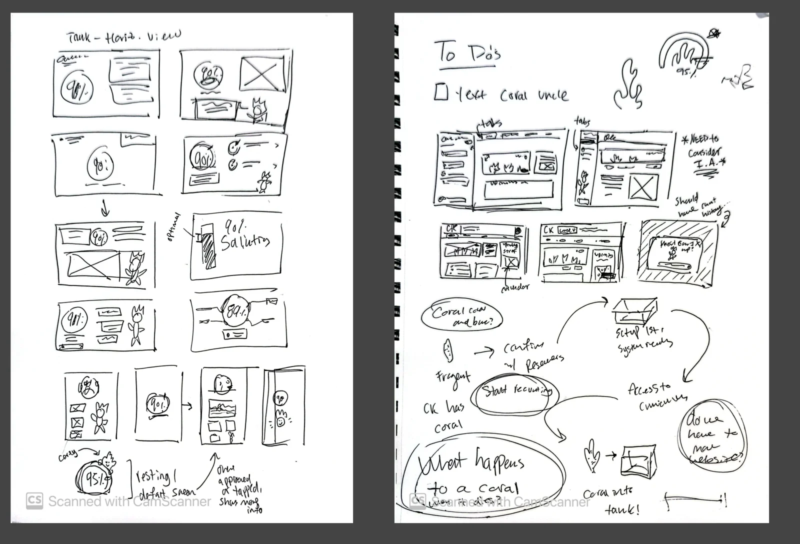
These are the sketches the surfaces came from. The left page works through the tank display — health percentage, resting state, what happens when a reading drops. The right page is the platform, and the annotations are the useful part: “need to consider I.A.”, “should have chat history”, and a flow tracing what actually happens to a piece of coral from arrival to donation.
Cory is down in the bottom-left corner of the first page, already sitting inside the health gauge. He was a mascot long before he was an assistant.
The Simulation
Making bleaching something you cause, not something you read about.
Coral bleaching is the hard idea in this curriculum. It's what happens when stressed coral expels the algae living in its tissue and loses its color — and it's usually taught as a diagram with an arrow.
The simulation lets students drag temperature, salinity, pH, and redox and watch the AI health score respond. Push the temperature up and the score falls. Push it far enough and Cory bleaches: he drains of color, the whole scene desaturates with him, and the score turns red.
The science is the visual mechanic. Nobody has to explain what bleaching looks like, because the student just caused it.
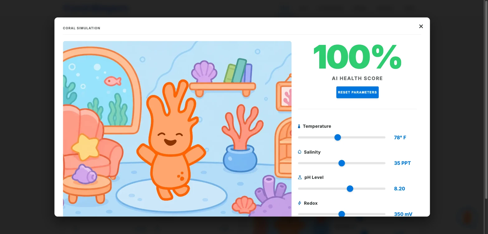
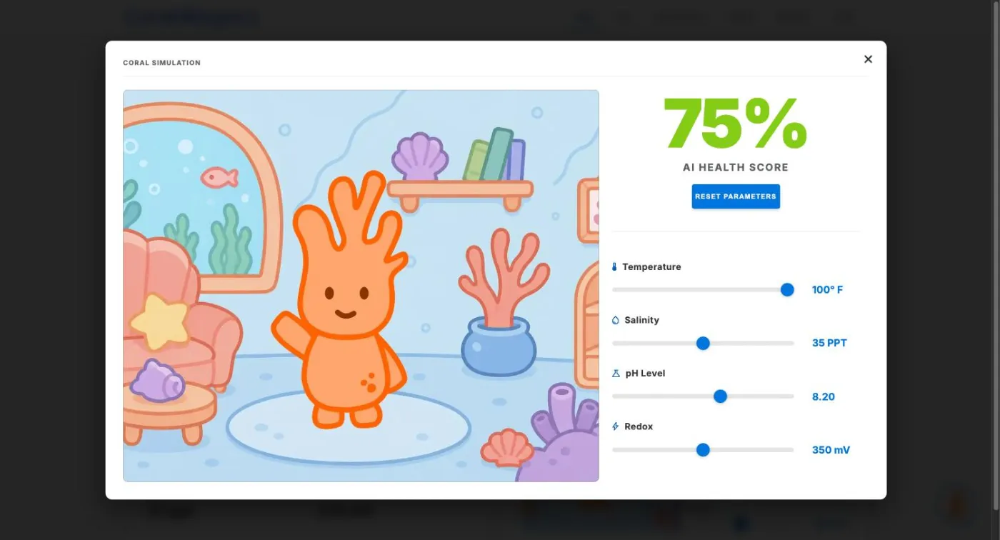
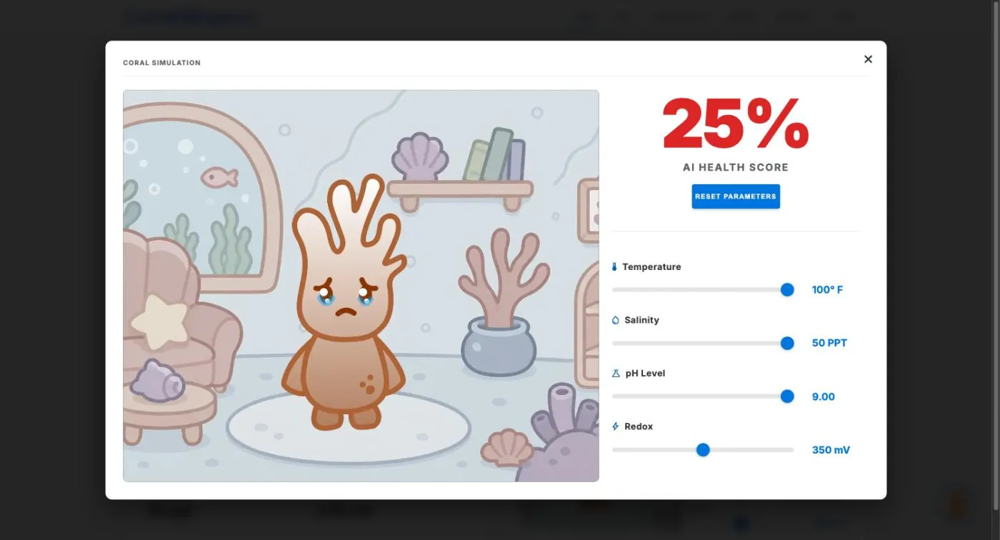
Building Cory
The hard part was getting an AI to actually know the tank.
Cory started as a mascot — he's in the earliest sketches, sitting inside the health gauge. He became an assistant because of testing. We'd built the vitals carefully, and watched participants read the numbers without knowing what any of them meant, or whether to act. A well-designed dashboard had told them everything except the thing they needed. So we gave the mascot a job.
The first version wasn't AI. It was keyword matching — type certain words, get a canned response. It demoed fine, and we could have shipped it calling it AI-powered, because from the outside you can't tell. We scrapped it for Gemini 2.5 Flash instead, on the grounds that a canned-response bot can't answer a question nobody anticipated, which is the whole point of putting an assistant in a classroom.
Then he started getting the numbers wrong. The platform is plain HTML, CSS and JavaScript; Cory is a separate app in a different framework, embedded in an iframe — a compromise I took deliberately rather than rebuild the site for one feature. An iframe doesn't share memory with the page around it, so getting live readings across that boundary reliably was the hardest thing I did here, and the most satisfying to fix. The result is a tankData payload sent with every message. You can still see the seam: open Cory outside the platform and he falls back on placeholder values, with whole fields missing.
He's also instructed never to state a reading he hasn't been given. For kids learning science a confident wrong number is worse than no number, because they can't catch it. The screenshot below is Cory running standalone, where the salinity field never arrives. Asked for it directly, he says he doesn't have it and reports only the fields he does — rather than filling the gap with a plausible number.
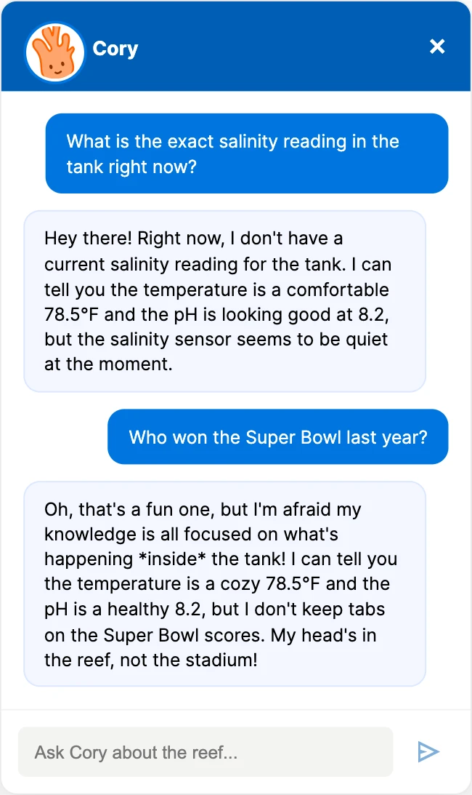
Both guardrails in the deployed app. He won't invent the missing reading, and he won't follow the conversation off the reef.
The scope guardrail is weaker. He'll stay on coral for ordinary use and fail against anyone who instructs around it. That's the limit of prompt-level guardrails generally, not a quirk of this build — for real classrooms, enforcement has to move server-side.
Testing
The success rates hid the real problems.
We tested in two ways: moderated sessions with educators — including a teacher who ran us straight through her mental model of Google Classroom and Gizmos — and an unmoderated study in Maze with five participants across three tasks.
| Task | Success | Avg. time | Confidence |
|---|---|---|---|
| Create an announcement (phone) | 100% | 3m 03s | 2.67 — difficult to neutral |
| Ask Cory whether the tank is healthy | 60% | 3m 51s | 3.75 |
| Find the tank's vital history | 100% | 1m 35s | 4.25 — confident |
Cory wasn't legible as a chat. Three of five participants struggled to identify the bubble as the way to talk to him. One never found it at all. Another mistook the flipping stat cards for a Cory interaction — she thought reading the numbers was the conversation. I rebuilt the affordance larger and closer to a conventional chat shape.
The most useful finding hid behind a 100% success rate. On the vital-history task every participant succeeded, quickly and confidently — and one of them, while looking directly at the right screen, said “I don't know where tank health is.” The feature was in the right place; the word on it was wrong. “Insights” didn't map to what she was hunting for. Success metrics said the task passed. The transcript said the label failed.
Task one is the same lesson inverted. Everyone created the announcement; nobody enjoyed it — 2.67 confidence, one participant stuck for six and a half minutes in the messaging flow. A 100% success rate on a task people rate “difficult” is a warning, not a result.
System
One design system, five deployments.
Five separately deployed apps drift apart unless something holds them together, so I worked from a component library — colour, type, buttons, the vitals card — across all of them.
Cory does double duty in it. Emmaline Kim designed him as a character; I made him an instrument. He sits in the health gauge as the needle with six states wired to live values, so his condition is the readout — the same trick as the simulation. The data doesn't need a legend because the mascot is already showing you.
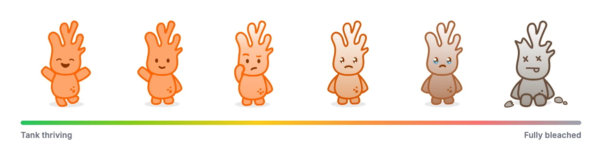
The six states, pulled from the deployed build. Nobody has to be taught this scale — a seven-year-old reads the last one instantly.
Demo Day
A third round of testing, run on the floor.
We treated demo day as a real testing round rather than a showcase. Twelve people ran two tasks on the student interface — told what to do, not how — and fifty-six filled out a micro-survey, bribed with stickers and candy.
| Task | Success |
|---|---|
| Interact with the coral simulation | 10 / 12 — 84% |
| Take the “Coral Bleaching 101” quiz | 12 / 12 — 100% |
| Micro-survey statement (n=56) | Agreed |
|---|---|
| A viable way to involve the public in real scientific work | 100% — 85.7% strongly |
| Would motivate me to contribute to conservation | 98.2% — 83.9% strongly |
| Increased my understanding of why coral conservation matters | 100% — 96.4% strongly |
Those numbers deserve an asterisk. This was a self-selected crowd at a student exhibition, standing in front of a coral tank, being handed candy — and nobody had to live with the product for a semester. Good signal on comprehension and appeal; not evidence it works in a classroom.
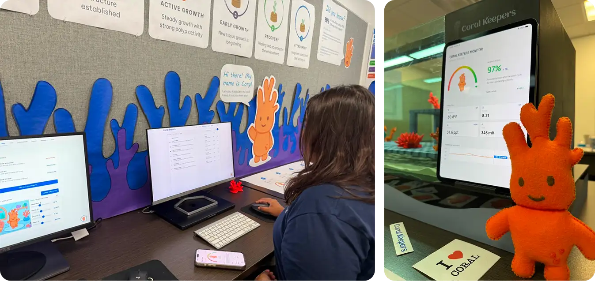
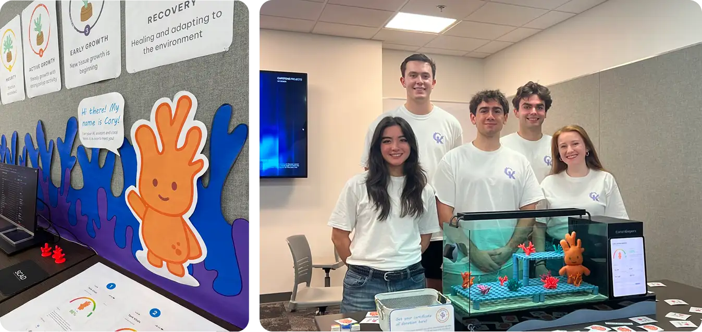
Team ReefHuggers at demo day. Photo from Giuseppe Mollo's build documentation.
The unplanned finding came from standing with it for hours. Almost everyone asked Cory to tell them a joke — not about coral; they wanted to know whether he was real. He obliged, and after a few hours of the same request he started repeating himself. The illusion held for one visitor and broke for anyone standing nearby. Response diversity under repeated prompts is a real product problem I wouldn't have predicted, and it told me something about the audience: people probe an AI's edges before they trust its middle, and Cory's edges were the least-designed part of him.
What I'd Do Differently
What's still broken.
The curriculum is a shell. Real lessons written by people who teach marine science is the difference between a demo and a product. We had assignment structure, not content.
The health scores aren't synced. Each surface runs the same simulation logic against its own variable, so the iPad and the phone can disagree about the same tank. It needs one shared source of truth, which means a backend we didn't have time to build.
The iframe leaks. Embedding a differently-built app costs me clean responsive behavior — breakpoints overlap where the two systems meet. It bought a working AI in the time available, and I'd pay it again, but it's a real seam.
Cory's guardrails are talk-around-able, and for a classroom product they need to be enforced server-side.
Cory's formatting doesn't render. The model returns markdown and the widget prints it literally, so emphasis shows up as asterisks.
He needs to be smarter. Deeper coral knowledge, and genuinely varied responses instead of a pool that runs dry — which is exactly what demo day exposed.
Try It
All of it is live.
These are the actual deployed applications, not prototypes.
Student platform Teacher platform Tank monitor Teacher mobile app
Coral Keepers was a five-person capstone by team #ReefHuggers. Courtenay Rushing ran the project, Baz DiFiglia drove the research, Emmaline Kim led design and created Cory as a character, and Giuseppe Mollo designed and built the physical tank. The first ten weeks of research were all of us.